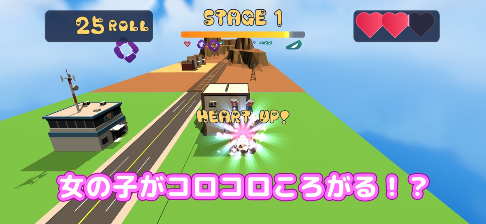
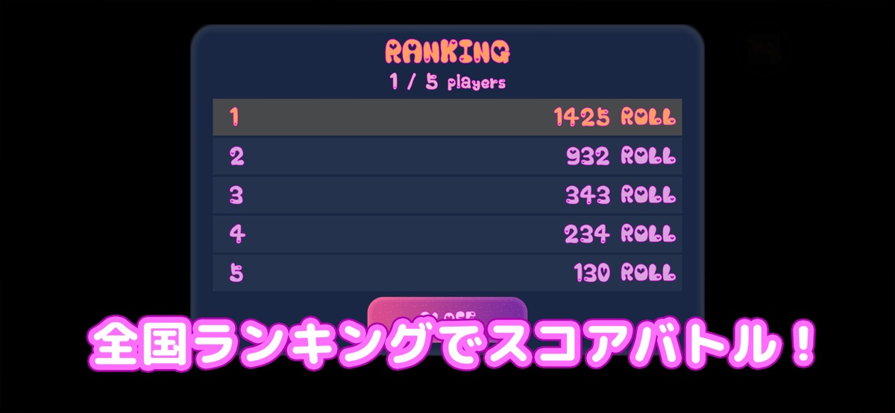

左右タップで方向転換
画面の左と右をタップして、転がる女の子の進路を調整。片手で遊べる軽快な操作です。
ROLLING CASUAL ACTION
左右をタップすると、女の子がころころ方向転換。障害物をよけ、アイテムを集めながらゴールを目指す、片手で遊べるゆるかわアクションです。


ROLL YOUR WAY
ゴールは道の先。でも、転がる女の子の前には建物や障害物が次々と現れます。左右のタップで小さく進路を変えながら、街を抜けていきます。
簡単な操作と少しずつ速くなるスピードが、もう一回だけ走りたくなるリズムを作ります。
FEATURES
操作は左右だけ。シンプルだからこそ、進路とアイテムの選び方がスコアにつながります。
画面の左と右をタップして、転がる女の子の進路を調整。片手で遊べる軽快な操作です。
ハートでHPを回復し、ローリングで回転力、スピードで前進速度をアップ。進むルートをその場で選びます。
ステージが進むほど速度も難しさも上昇。障害物を見極め、HPを残してすべてのゴールを目指します。
GAME SCREENS
ハートを取るか、加速するか。障害物の配置を読みながら、自分だけの走り方でスコアを伸ばします。

HOW TO PLAY
一度始めれば、走るのは自動。プレイヤーは障害物とアイテムを見ながら、左右の選択に集中できます。
画面の左側・右側をタップして方向を変え、一本道の上を進みます。
HP回復や能力アップを選び、次の障害物に備えながらスコアも伸ばします。
3つのステージを走り切り、獲得スコアで全国ランキングへ挑戦します。
 ▶ PLAY MOVIE
▶ PLAY MOVIE
KEEP ON ROLLING
方向転換するたびに揺れる進路、近づいてくる障害物、光るアイテム。ゆるい見た目と忙しい判断のギャップをお楽しみください。
FREE TO PLAY
iPhone・Android対応。基本プレイ無料で始められます。
FAQ
画面の左側と右側をタップして、転がる女の子の方向を変えます。前進は自動です。
ハートはHP回復、ローリングは回転スピード、スピードは前進速度をアップします。
全部で3ステージです。進むほどスピードが上がり、障害物をよける判断も忙しくなります。
基本プレイは無料です。App StoreまたはGoogle Playからダウンロードできます。